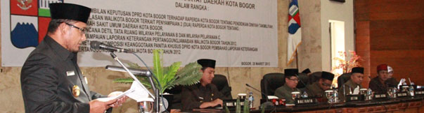

walikota sampaikan perubahan APBD 2013
25 Agustus 2013

"perubahan APBD Kota Bogor tahun 2013 selama lebih dari satu semester telah terjadi berbagai perkembangan yang dapat mempengaruhi dan mengubah struktur APBD 2013,"katanya di Bogor,senin.
ia mengatakan target pendapatan daerah sampai dengan akhir tahun 2013 perlu dikoreksi.semula pendapatan daerah ditargetkan bisa mencapai Rp.1,387 triliun.Namu sampai akhir tahun diperkirakan dapat mencapai Rp.1,505 triliun.
lebih lanjut dijelaskan,penigkatan pendapatan daerah sampai dengan akhir tahun 2013 dipicu terutama oleh perbaikan target pendapatan asli daerah (PAD) yang mengalami kenaikan sampai 23,82 persen sehingga jumlah PAD yang ditetapkan semula sebesar Rp.315 miliar lebih pada perubahan kali ini menjadi Rp.390 miliar lebih
penigkatan target PAD tersebut didorong oleh perubahan target pendapatan daerah dari hasil retribusi daerah yang naik sebesar 71,45 persen dan pendapatan pajak daerah yang naik sebesar 18 persen.
selain itu,lanjut walikota,perubahan target pendapatan daerah juga dipengaruhi oleh kenaikan pendapatan yang bersumber dari lain-lain pendapatan daerah yangs sah sampai mencapai 13,42 persen sehingga jumlah keseluruhan terkoreksi dari Rp.284,17 miliar menjadi Rp.322,91 miliar.
komponen terbesar yang berkontribusai pada kenaikan lain-lain pendapatan daerah yang sah adalah pos bantuan keuangan pemerintah provinsi jawa barat yang bertambah sebesar Rp.28,2 miliar sehingga total bantuan keuangan pemerintah provinsi jawa barat tahun 2013 mencapai Rp.29,33 miliar sedangkan sektor belanja daerah,lanjut walikota,terdapat beberapa tambahan kebutuhan yang perlu dipenuhi dengan menuntaskan program dan kegiatan yang sudah dianggarkan pada APBD kota bogor tahun 2013.
peningkatan belanja daerah dipicu oleh pos belanja tidak langsung yang mengalami kenaikan 3,86 persen sehingga jumlah keseluruhan belanja tidak langsung terkoreksi dari Rp.800,84 miliar naik menjadi Rp.831,71 miliar pada pos belanja tidak langsung,anggaran yang mengacu penigkatan adalah bertambahnya pos belanja hibah sebesar 36,98 persen dari target semula Rp.55,44 miliar,menjadi Rp.75,93 miliar.
walikota mengakui,bahwa kenaikan belanja tidak langsung memang tidak sebesar kenaikan yang terjadi pada belanja langsung,karena kenaikan belanja langsung mencapai 13,52 persen sehingga jumlah belanja langsung terkoreksi dari Rp.741,21 miliar menjadi Rp.841,43 miliar kenaikan belanja langsung ini,jelasnya.